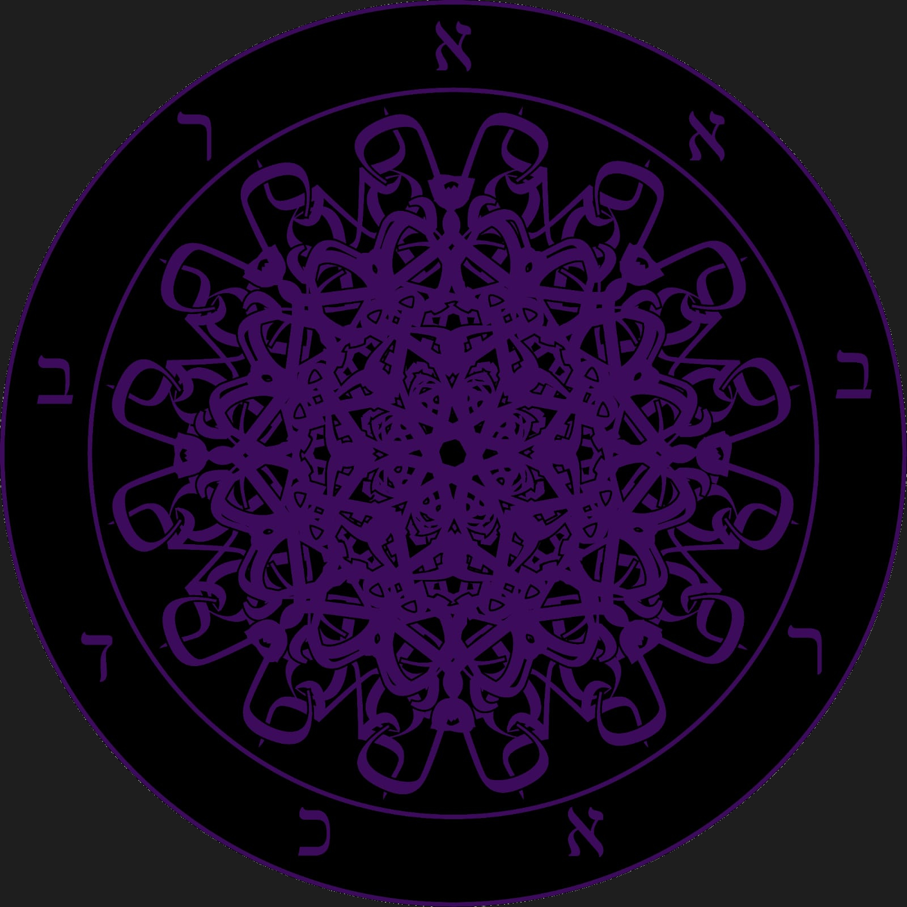

De manhã, com a ascensão de Vênus, nos vêm Eósforo, O Portador da Aurora, comandando os céus em nome de sua mãe, Aurora. Eósforo é o prenúncio da luz, a Estrela da Manhã, este aspecto representa a razão, o aspecto celestial de Lúcifer. Ao anoitecer, Eósforo cai e torna-se Héspero, a Estrela da Noite, o aspecto pós-celestial de Lúcifer. Este representa os instintos e os sentidos. Eósforo sacrifica-se para continuar dando luz à humanidade, transformando-se em Héspero. Esta luz é a luz do conhecimento. Lúcifer sacrificou sua sacralidade para dar o conhecimento à humanidade, tal como Prometeu.

Em Lúcifer ocorre o encontro da Angeologia e Demonologia, Feminino e Masculino, o desenvolvimento da Luz e da Sombra – Razão e instintos, colhendo frutos tanto do cristianismo como do paganismo; o Anjo Portador da Luz em seu ciclo de Queda e Ascensão, o caminho para a obtenção da Gnose, – a Catarse.
A Academia Brasileira de Conhecimentos Arcanos é uma instituição que busca pelo desenvolvimento de todos os nossos aspectos para atingirmos o verdadeiro conhecimento, o conhecimento que foi ocultado por trás da cortina por aqueles que tem medo de que nós, nascidos do fogo, tenhamos consciência de nosso verdadeiro poder. A A.’. B.’. C.’. A.’. guia-nos para descobrir o verdadeiro potencial do que chamamos de nossas Chamas Negras – A centelha do Éter que permaneceu dentro de nós após toda a impurificação dos elementos caóticos de nossa alma!